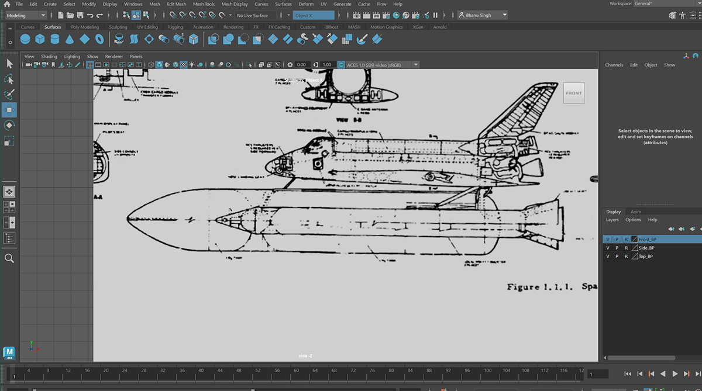
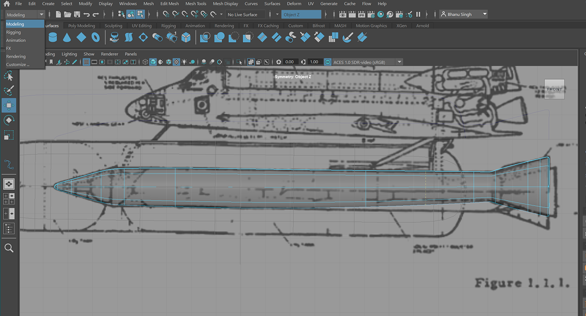
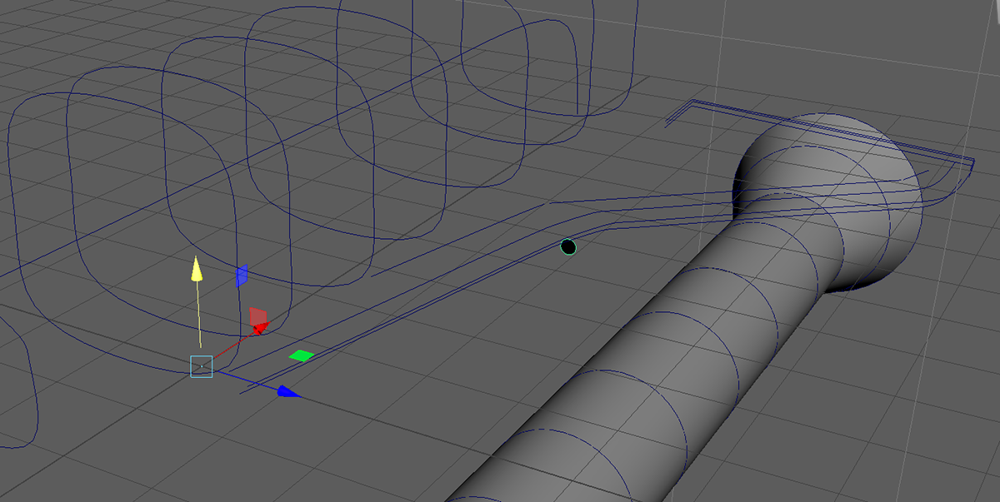
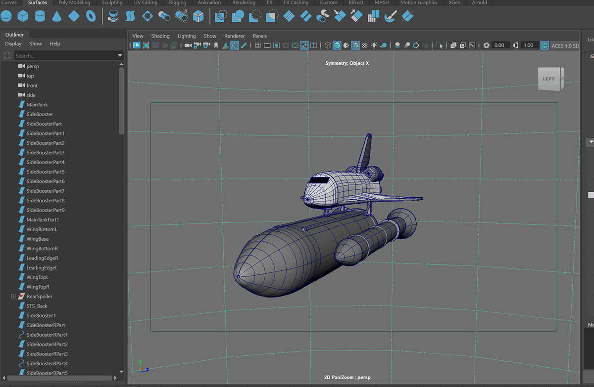
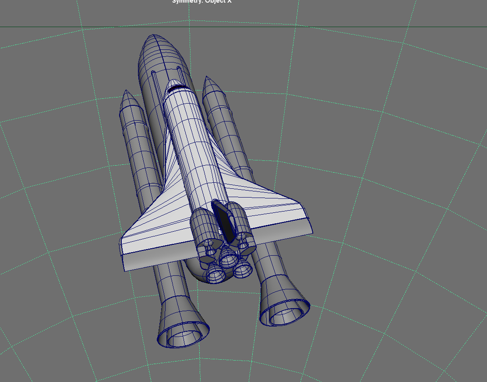
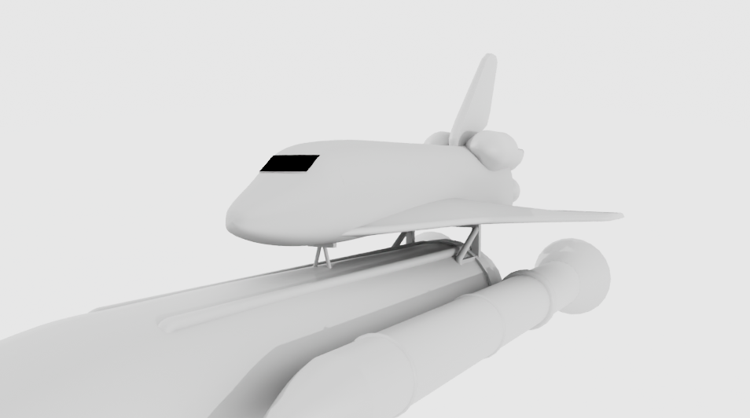

NURBs Space Shuttle Vehicle Modeling
The STS Launch Vehicle, modeled with NURBs surfacing in Maya inside a two-week window.

For this project I chose to model the STS Launch Vehicle — better known as the Space Shuttle — using NURBs modeling in Maya. NURBs is particularly well suited to aerospace subjects: its mathematically precise curved surfaces closely replicate the organic shapes found on real-world spacecraft. The project was completed within a tight two-week window and didn't require a texturing pass.
I started by sourcing the original engineering blueprints directly from NASA's official website. Many of those turned out to be inaccurate or lacking in detail, so the model needed a significant amount of additional work using photographic references of different parts of the vehicle. Individual components — the orbiter, the external tank, and the solid rocket boosters — were studied and built separately, one section at a time, with careful attention to how each part connects and aligns with the others.





